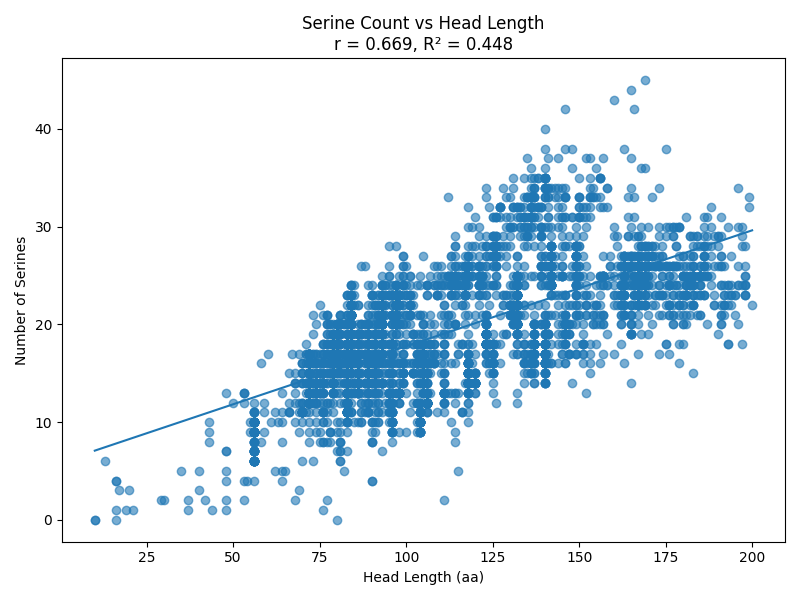
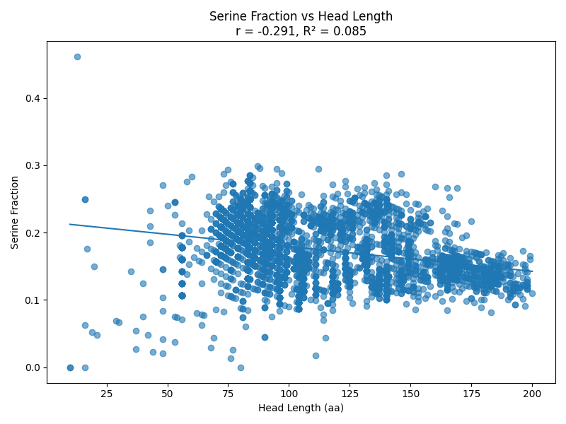
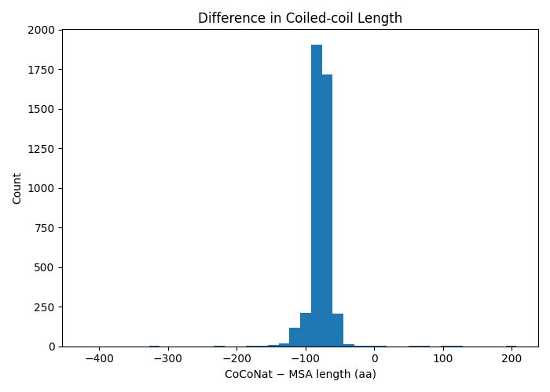
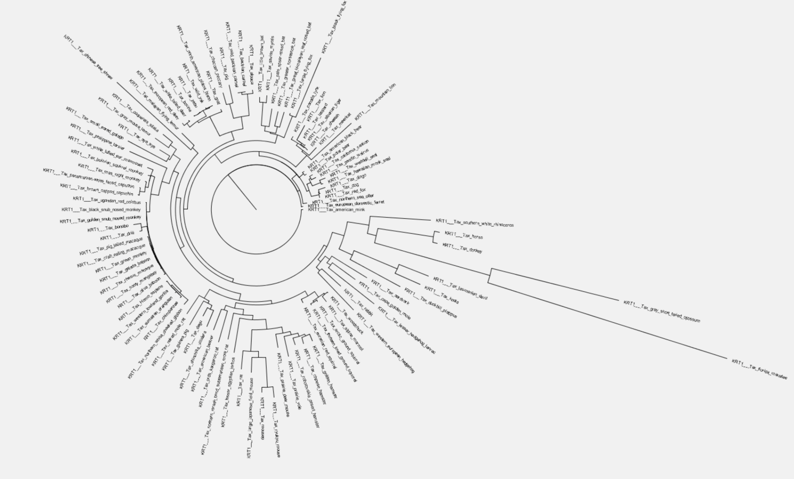

Tanishq Milani — sequence, structural, and synteny analysis of keratin genes across mammalian species
120 organisms4,442 keratinsType I / Type II classificationMSA · Phylogenetics · Synteny
§00 Overview
Identify, filter, classify, and analyze keratin datasets across multiple organisms using sequence data — from raw UniProt records through to genomic synteny, covering sequence filtering, Type I/II classification, terminal domain comparison, coiled-coil structure prediction, multiple sequence alignment, phylogenetic reconstruction, and genomic locus analysis.
§01 Data Processing & Filtering
Parsed UniProt (UniRef100) datasets to extract keratin sequences
Applied the following filters:
Removed fragments, KAPs, low-quality, microfibrillar, and cochlear keratins
Minimum sequence length set to 300
For clones and isoforms, retained the sequence with highest length
Standardized nomenclature
Due to updates in UniRef and SwissProt, reference proteomes were used instead to avoid data inconsistencies (Reference Proteomes)
Positive correlation between head length and serine count (r = 0.67, R² = 0.45)
Weak negative correlation between head length and serine fraction (r = -0.29, R² = 0.09)


§04 Coiled-Coil Region Prediction
Coiled-coil regions were predicted for all keratin sequences using CoCoNat
An independent coiled-coil annotation was obtained using an MSA-based approach:
Human keratin coiled-coil boundaries (1A, 1B, 2A, 2B domains) were used as reference coordinates
These boundaries were mapped onto keratin-wise MSAs to extract the corresponding coiled-coil regions from all orthologous keratins across species
The lengths of the CoCoNat-predicted coiled-coil regions were compared with the MSA-derived coiled-coil regions
Distribution of length differences (CoCoNat − MSA) showed a strong peak around −80 aa, indicating CoCoNat generally predicts shorter coiled-coil regions than the MSA-based extraction.

Figure — CoCoNat vs. MSA-derived coiled-coil length differences
§05 Multiple Sequence Alignment
Alignments generated using MAFFT for:
Individual keratin families across all organisms (keratin-wise alignments)
All keratins within each organism (organism-wise alignments)
All Type I keratins
All Type II keratins
Complete keratin dataset (all keratins across all organisms)
§06 Phylogenetic Tree Construction
Maximum likelihood phylogenetic trees were constructed using IQ-TREE
Trees were generated for the following datasets:
keratinwise_human — individual trees for each human keratin family
keratinwise_nonhuman — individual trees for each non-human keratin family across mammalian species
type1keratinmsa — tree for all Type I keratin proteins
type2keratinmsa — tree for all Type II keratin proteins
allkeratinmsa — tree containing all keratin proteins
The best-fit amino acid substitution model for each alignment was selected automatically (MFP)
Figure — KRT1 treefile

§07 Synteny Analysis
Objective
Determine the genomic organization of keratin genes across species and identify conserved keratin loci.
Completed Work
Compiled a dataset of keratin UniProt accessions across all species
Retrieved genomic coordinates using the EBI Proteins Coordinates API
Successfully obtained genomic coordinates for 4,135 accessions; 359 outdated accessions were excluded from downstream analyses
Constructed the master annotation table
gene_coordinates_annotated.csv
containing chromosome, genomic coordinates, strand, etc.
Identified approximately 11 species with corrupted genomic end coordinates caused by assembly inconsistencies
Manually validated two genuine long keratin genes (hybrid cattle KRT5 and horse KRT18) and excluded them from QC flagging
Compared end-based and start-based gap calculations, showing that corrupted end coordinates generated negative gap estimates
Start-to-start genomic distances chosen
Built a locus detection pipeline using chromosome-specific Median Absolute Deviation (MAD) thresholds, with a 300 kb threshold for chromosomes containing fewer than five genes